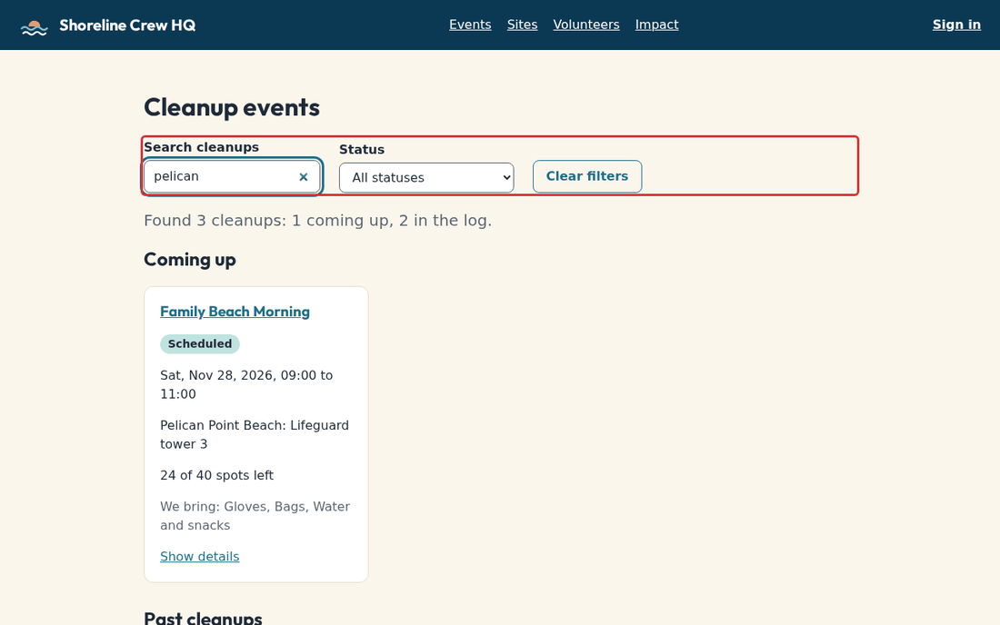
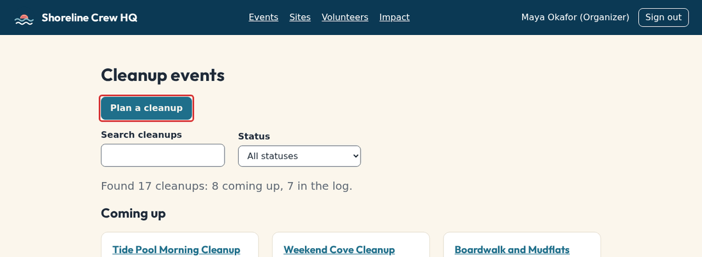

How to teach Lessons 5.3 and 5.4, which close Module 5: measure Shoreline Crew HQ's search box with the Profiler, fix the waste by hand with memo, then turn on the React Compiler for the whole app and check its work with numbers; then three component patterns with their TypeScript types: a polymorphic Button, a generic DataList with a render prop, and accessible compound Tabs with a new Impact tab. Two labs that count renders and test types.
lesson_19.html and lesson_20.html open for the diagrams, the full tables and the exercise solutions. Labs live in labs/module-14/ (learners copy the kit's labs/ folder into shoreline/): starter/ folders, TASKS.md and debug_stale_roster.tsx are handouts; solution/ folders are yours until the session is over.5.3 is easy to turn into a list of tricks ("wrap things in memo"), and 5.4 into a parade of clever types. Both lessons argue the opposite: measure first and change one thing; start with props and children and reach for a pattern only when they get in the way. Keep coming back to two questions: "what did the measurement say?" and "what problem does this pattern solve here?". The second risk is the network: Step 3 of 5.3 runs npm install (four packages, 45 with their dependencies), and both labs install their own packages.
In the room: the guided labs make the measuring concrete (the tests count the renders and fail with the count), and the 5.4 project slot types the three new files, so everybody leaves with Button, DataList and Tabs in place and only the wiring left for home.
python3 labs/check_labs.py module-14 from this kit's folder (12 runs, under a minute once the packages are cached: each starter fails with its TODO messages, each solution passes its tests, type check and lint, Lab 5.3's untouched starter runs with the React Compiler on, and the debug handout gets the exhaustive-deps warning). No API needed.babel-plugin-react-compiler, @rolldown/plugin-babel, @babel/core@7 and @types/babel__core; Lab 5.3 installs React, Vitest, oxlint and the compiler packages; Lab 5.4 the react-vitest set. On a slow venue network, run npm install once in each lab's starter/ on the projector machine beforehand (npm's cache then serves repeats) and keep lesson-19-end.zip and lesson-20-end.zip from the course downloads on the USB stick.labs/module-14/ without the solution/ folders; lesson-19-start.zip (= the end of 5.2) for anyone whose Session 13 code is not working, lesson-20-start.zip (= the end of 5.3) for anyone who could not install the compiler.shoreline-hq at the end of Lesson 5.2 (or unzip lesson-19-start), large font, the API and the dev server in two terminals; Chrome with the React Developer Tools extension (Profiler tab; settings Highlight updates and Record why each component rendered); http://localhost:5173/events and /events/e01 in tabs; lesson_19.html and lesson_20.html. For 5.4's demo, a second copy at lesson-20-end so you can open the finished files while the room types.| Symptom | Cause | Fix |
|---|---|---|
error TS2353: ... 'babel' does not exist in type 'Options' | An older tutorial's react({ babel: ... }) setup | Lesson 5.3 Step 3's vite.config.ts: react() plus babel({ presets: [reactCompilerPreset()] }). |
npm install resolves Babel 8 | @babel/core without @7 | The lesson's command pins @babel/core@7 (the template's major version). |
| The Profiler logs nothing | npm run preview (a production build), or the console filtered | The dev server; Console filter cleared. Production React has no profiling. |
| memo does nothing | A prop is a new function, object or children each render | useCallback / useMemo (or the compiler); measure again. |
| Gloves comes back after two removals | A useCallback with a missing dependency (stale value) | Read the exhaustive-deps warning; use the updater form. |
React Compiler skipped optimizing this component or hook in lint | A component breaks a Rule of React (a ref read while rendering, a mutation) | Fix the warning; the compiler then optimizes it again. |
| A tab shows no panel and no error | Tab and TabPanel ids differ (impact / impacts) | Compare the ids; Exercise 3 makes it a type error. |
<TabPanel> must be used inside <Tabs> and the page's error message | A part rendered outside its parent | Move it inside <Tabs> (or render the plain details). |
| Check-in marks reset when switching tabs | The panel returns null instead of hidden | Keep panels mounted with hidden={id !== selected}. |
| A very long TS2322 on Button | A prop that the element in as does not have | Read the last line of the error first. |
| Clock | Minutes | Segment | What happens |
|---|---|---|---|
| 0:00 | 10 | Opening: warm-up and the session map | Three retrieval questions on Lessons 5.1 and 5.2, then the plan: measure, fix, let the compiler do it; three patterns. |
| 0:10 | 10 | 5.3 Frame and mental model | Three reasons to render, render versus commit, the tide chart; 560 calls for one word. |
| 0:20 | 20 | 5.3 Live demo: measure, memo, the compiler | Profiler in EventsPage, memo(EventGroups), the build before and after the compiler, the rules it needs. |
| 0:40 | 15 | 5.3 Guided lab | labs/module-14/l5_3-rendering-performance/starter: Tasks 1 and 2 in pairs, the tests count the renders. |
| 0:55 | 15 | 5.3 Start the lesson project | Steps 1 to 3 on every laptop: the Profiler line per key, memo, the compiler installed and built. |
| 1:10 | 10 | Break | Leave the three reasons and the pair rule (memo + useCallback) on the board. |
| 1:20 | 10 | 5.4 Frame and mental model | The check-in table: three situations props and children do not cover. |
| 1:30 | 25 | 5.4 Live demo: Button, DataList, Tabs | Polymorphic Button and its three wrong uses, a generic list and its constraint error, compound Tabs with the keyboard. |
| 1:55 | 15 | 5.4 Guided lab | labs/module-14/l5_4-component-patterns/starter: Task 1 in pairs, a compound ChoiceGroup. |
| 2:10 | 30 | 5.4 Start the lesson project | Steps 1, 3 and 4: Button.tsx, DataList.tsx with EventList and SitesPage, Tabs.tsx. |
| 2:40 | 10 | 5.4 Choosing a pattern and Module 5 close | The choosing table, what 6.1 changes (one call site), the bring list. |
| 2:50 | 10 | Wrap-up | Exit ticket (3 questions), homework, bring list for Session 15. |
| Total | 180 | Ends at 3:00. |
In the room. The lesson pages estimate 140 + 150 = 290 minutes for a learner working alone; after the opening, the break and the wrap-up the room has 160. Lesson 5.3 gets 60 minutes (model, demo, lab, Steps 1 to 3 of its project), Lesson 5.4 gets 90 (model, demo, lab, Steps 1, 3 and 4, and the choosing table that closes Module 5).
Goes home (about 2 to 3 hours). 5.3: Step 4 (measure with the compiler, remove the memo and the Profiler) and Step 5 (checks and the organizer walk-through), Exercises 1 and 2, the quiz, the journal. 5.4: Step 2 (the remaining buttonStyles buttons), Steps 5 to 7 (impact report, tabs on the cleanup page, the keyboard check), Exercises 1 and 2, the quiz, the journal. Both labs' remaining tasks, Lab 5.3's two stretches. Exercise 3 of each lesson is an optional stretch.
Protect, in this order: the 5.3 "measure before you touch anything" and "one memo" steps (the habit the lesson is about); Step 3 on every laptop (the compiler stays on for the rest of the course); the 5.4 Button misuse step and the Tabs keyboard walk; the 5.4 project slot (three files typed). Cut first: the impact-report step and the RouteLink step of the 5.4 demo (both in the lesson), then the 5.3 price-list step (show the two build lines only).
| 6m | Three retrieval questions, no notes, then answers out loud |
| 4m | The session map: measure, fix by hand, let the compiler do it; then three patterns that close Module 5 |
lesson-19-start.zip (= the end of Lesson 5.2) into a fresh folder, npm ci, .env.example to .env.local. Do it during the warm-up, not during the demo.| 10m | Frame: three reasons to render, render versus commit, the tide chart |
| 20m | Live demo: Profiler, memo, the build before and after the compiler, the counts table |
| 15m | Guided lab: labs/module-14/l5_3-rendering-performance/starter, Tasks 1 and 2 |
| 15m | Start the lesson project: Steps 1 to 3 |
From the lesson: "Each render is the crew lead redrawing the whole tide chart from the latest readings, then holding it next to the one on the wall and only repainting the lines that moved. Redrawing is usually quick, so React does it freely. Performance work is noticing when the redrawing itself gets expensive, and arranging for the parts that cannot have changed to be skipped."
Then the three reasons, with the HQ example for each (the lesson's table):
| Reason | In the HQ |
|---|---|
| Its own state changed (a set… call or a dispatch) | Typing in the search box calls setQuery, so EventsPage renders |
| Its parent rendered and created it again | EventsPage renders, so EventGroups, two or three EventLists (three for organizers) and every EventCard below render too |
| A context it reads changed | Signing out changes AuthContext, so every component that calls useAuth() renders |
And the number that makes it real: typing pelican called 560 component functions before the API answered, 80 per key, while not one element inside the fifteen cards changed. "All that rendering produced the same cards it already had."
In shoreline-hq at the end of Lesson 5.2, then the end of 5.3. Terminal outputs below are real runs on copies of those exact stages; the console lines are the lesson's measurements (yours will have different times and the same number of lines).
src/pages/EventsPage.tsx (the code from Lesson 5.2), type Step 1 live: import Profiler and the type, the temporary logRender, and the <Profiler> around <EventGroups>. Hover phase: TypeScript inferred 'mount' | 'update' | 'nested-update' from the annotation on the variable.
// Temporary: how long each render of the list took const logRender: ProfilerOnRenderCallback = (id, phase, actualDuration) => { console.log(`${id} ${phase}: ${actualDuration.toFixed(1)} ms`) }It type-checks (
npx tsc -b prints nothing). Console open, type pelican quickly. The lesson's measurement (your times differ; the number of lines does not):EventGroups update: 8.6 ms EventGroups update: 8.3 ms EventGroups update: 7.5 ms EventGroups update: 6.5 ms EventGroups update: 6.7 ms EventGroups update: 6.8 ms EventGroups update: 6.9 ms EventGroups update: 8.8 ms EventGroups update: 1.7 msSeven lines for seven keys, then the debounced search and the answer. "Every line is the whole list rendered again for nothing: 80 component calls per key." If React DevTools is installed, turn on Highlight updates and type again: every card flashes.
memo in the import and const EventGroups = memo(function EventGroups({ ... }: EventGroupsProps) { with }) at the end. Ask first: "which of the four props change while I type?" (none: search is debounced).
EventGroups update: 0.0 ms EventGroups update: 0.0 ms EventGroups update: 0.0 ms EventGroups update: 0.0 ms EventGroups update: 0.0 ms EventGroups update: 0.0 ms EventGroups update: 0.0 ms EventGroups update: 8.8 ms EventGroups update: 1.7 ms"0.0 ms: the Profiler still reports the commit, but nothing inside rendered." The lesson counted 560 → 14 calls while typing. Then the pair rule on the board: memo needs props that stay the same, which is what useCallback and useMemo are for.
npm run build on the code Lesson 5.3 starts from (on learners' machines the times differ):
npm run build
dist/assets/index-6OdvjMRn.js 252.23 kB │ gzip: 78.51 kB ✓ built in …msWrite the module count and the JS size on the board.
vite.config.ts:
npm install --save-dev babel-plugin-react-compiler @rolldown/plugin-babel @babel/core@7 @types/babel__core
added 45 packages, and audited 75 packages in 3s 15 packages are looking for funding run `npm fund` for details found 0 vulnerabilities
import react, { reactCompilerPreset } from '@vitejs/plugin-react' import babel from '@rolldown/plugin-babel' import { defineConfig } from 'vite' // https://vite.dev/config/ export default defineConfig({ plugins: [ react(), // The React Compiler: works out what each component can reuse between renders babel({ presets: [reactCompilerPreset()] }), ], })
react() stays (TSX, Fast Refresh); babel(...) adds one pass that runs only the compiler preset. Build again:npm run build
dist/assets/index-B_WIRHHo.js 270.77 kB │ gzip: 85.10 kB ✓ built in …ms2 more modules, 18.5 kB more JavaScript (6.6 kB gzipped). Back on the dev server with the memo removed again, the console shows two lines in all: the compiler cached the whole
<Profiler> element. The lesson's counts:| Component renders | Lesson 5.2's code | memo(EventGroups) | Compiler, no memo |
|---|---|---|---|
| Typing pelican, before the answer | 560 | 14 | 14 |
| The whole search, answer included | 660 | 114 | 28 |
| Show details on one card | 5 | 5 | 1 |
| Signing out on /events as Maya (the sign-out's own commit) | 82 | 82 | 19 |
| Check in one volunteer on the desk | 23 | 23 | 23 |
⚠ react(refs): Cannot access refs during render
╭─[src/components/EventCard.tsx:27:3]
26 │ const renders = useRef(0)
27 │ renders.current += 1
· ───────┬───────
· ╰── Cannot access ref value during render
28 │ console.log(`${event.title}: render ${renders.current}`)
╰────
…
Found 3 warnings and 0 errors.Folder: labs/module-14/l5_3-rendering-performance/starter/ with labs/module-14/l5_3-rendering-performance/TASKS.md; your reference is labs/module-14/l5_3-rendering-performance/solution/. Three small screens with a note box each; the tests count work with vi.mock (a wrapper around a component or function in another file adds 1 to a counter each call), the way the Profiler shows who rendered. npm install once in starter/.
npm test: three tests fail, each with its count:AssertionError: TODO 1: rows drawn while typing the note: expected 12 to be +0 // Object.is equality AssertionError: TODO 2: labels drawn while typing the note: expected 4 to be +0 // Object.is equality AssertionError: TODO 3: totals added up while typing the note: expected 5 to be +0 // Object.is equality
memo list redraws its three rows on every key (12 for four letters). Circulate for useCallback with an empty array and present read directly (the lesson's stale-value mistake: the first test catches it, and the handout shows the lint warning).SortToggle takes no props and still renders: the context value is a new object each time. Ask "why does memo not help?" (memo never blocks the third reason). ✓ src/lab.test.tsx (7 tests)
✓ Task 1: the shift roster (2)
✓ marking two volunteers in a row keeps both marks
✓ typing a note draws no row again
✓ Task 2: the sort order context (2)
✓ the button still switches the order
✓ typing a note draws no label again
✓ Task 3: the weight report (3)
✓ totals per beach, heaviest first
✓ typing a note adds nothing up again
✓ new logs are added up again
Tests 7 passed (7)npm run test:compiler. Real result: the compiler passes Tasks 1 and 2 without a Hook, and still adds the logs up 5 times in Task 3, like the lesson's report experiment. Then the handout debug_stale_roster.tsx.The lesson project is Measure and Speed Up the Events Page, five steps. In the room: Steps 1 to 3 (15 minutes), so every laptop leaves with the compiler on, which the rest of the course builds on.
logRender in EventsPage; type pelican; one console line per key.memo(EventGroups); the lines drop to 0.0 ms.npm run build (note the numbers), the install, the new vite.config.ts, npm run build again. Done in the room = the second build ends with 82 modules and "built in". No network? Copy vite.config.ts and package.json from lesson-19-end and run npm install at home.npx tsc -b, npm run lint, the organizer walk-through, the "what would I measure" note for the Lesson 11.1 plan).
Ask these out loud during the demo and the lab:
onRemove was a new function every render, so a prop always differed (Object.is).<Profiler onRender> log in a production build? Answer: nothing.Workbook self-check, items Q1 to Q6 (learners do them at the end of the block or at home).
Answers: Q1 C) Each card calls useAuth(), and the context really changed: no memoization blocks that reason; Q2 B) Gloves, Grabbers: Gloves comes back; Q3 Nothing at all: production builds of React do not call onRender; Q4 C) Keep react() and add babel({ presets: [reactCompilerPreset()] }) from @rolldown/plugin-babel; Q5 D) const top = useMemo(() => heaviest(logs, 3), [logs]); Q6 Task 3 (the weight report still adds up the logs on every key press); an explicit useMemo, which the compiler keeps. Full set with explanations in the Answer Key.
Support: pair learners who are new to DevTools with someone who has the extension; the Profiler is optional (the <Profiler> console line is the measuring tool every laptop has). For the pair rule, draw two boxes: a memo component and its props, and cross out the prop that is "new every time".
Stretch: Lab 5.3 Task 3 and both stretches; the lesson's Exercise 3 (a row component for the desk: 23 renders down to 10) and the Bonus Challenge (find the slowest render in the HQ and decide, with a number, whether it is worth fixing).
| 10m | Frame: the check-in table; three situations props and children do not cover |
| 25m | Live demo: Button and its wrong uses, DataList and its constraint error, compound Tabs with the keyboard |
| 15m | Guided lab: labs/module-14/l5_4-component-patterns/starter, Task 1 |
| 30m | Start the lesson project: Steps 1, 3 and 4 |
| 10m | Choosing a pattern and Module 5 close |
From the lesson: "On the morning of a cleanup, the crew sets up a check-in table. Compound: everyone working at the table reads the same clipboard, so nobody has to be told which page is open. Render prop: the table hands each arriving volunteer to whoever is on name tags, and that person decides what the tag says. Polymorphic: the crew vest looks the same whether a volunteer or the harbor master wears it; what changes is who is inside."
Then the three situations, one sentence each: parts that only work together (a tab and its panel); a frame that does not know its contents (a list of cleanups, sites or debris counts); one look on different elements ("Plan a cleanup" must be a link). "None of them needs a new React API: context, generics and function props, combined."
In shoreline-hq at the end of Lesson 5.4 (a second copy, so you can open the finished files while the room types), with the API running. Terminal outputs are real runs on a copy of that stage.
Button.tsx (or type it with the room: Step 1). Read the type from the inside out: ElementType, a generic with a default, ComponentPropsWithRef<C>, Omit of the two props Button owns.
import type { ComponentPropsWithRef, ElementType } from 'react' import styles from './Button.module.css' export type ButtonVariant = 'primary' | 'secondary' | 'link' /** Button's own props, plus every prop of the element or component named in `as` */ type ButtonProps<C extends ElementType> = { /** What to render: 'button' (the default), 'a', or a component such as a router link */ as?: C variant?: ButtonVariant } & Omit<ComponentPropsWithRef<C>, 'as' | 'className'> // The HQ's one button look, on whatever element the job needs export function Button<C extends ElementType = 'button'>({ as, variant = 'secondary', ...props }: ButtonProps<C>) { const Component = as ?? 'button' // A <button> in a form submits unless told otherwise: make "button" the default type const type = Component === 'button' ? 'button' : undefined return <Component type={type} {...props} className={styles[variant]} /> }Then put the lesson's three wrong uses in
src/Scratch.tsx and run npx tsc -b (first line of each error):npx tsc -b
src/Scratch.tsx:6:15 - error TS2322: Type '{ href: string; children: string; }' is not assignable to type 'IntrinsicAttributes & { as?: "button" | undefined; variant?: ButtonVariant | undefined; } & Omit<DetailedHTMLProps<ButtonHTMLAttributes<HTMLButtonElement>, HTMLButtonElement>, "as" | "className">'.
src/Scratch.tsx:7:41 - error TS2322: Type '{ as: "a"; href: string; disabled: true; children: string; }' is not assignable to type 'IntrinsicAttributes & { as?: "a" | undefined; variant?: ButtonVariant | undefined; } & Omit<DetailedHTMLProps<AnchorHTMLAttributes<HTMLAnchorElement>, HTMLAnchorElement>, "as" | "className">'.
src/Scratch.tsx:10:15 - error TS2322: Type '"danger"' is not assignable to type 'ButtonVariant | undefined'.
Found 3 errors in the same file, starting at: src/Scratch.tsx:6
A button has no href (the Did you mean 'ref' is a spelling guess), a link has no disabled, "danger" is not a ButtonVariant. Show the full first error once on the projector so they see why: it prints the whole computed props type.renderItem) and a key function. Hover site in SitesPage's call: (parameter) site: Site, inferred from items. Then the constraint experiment (the lesson's IdList in Scratch.tsx):
interface DataListProps<T> { items: T[] /** A key for each item: unique in the list and the same on every render */ getKey: (item: T) => string /** What one item looks like: a render prop, called once per item */ renderItem: (item: T) => ReactNode /** Shown instead of an empty list */ emptyMessage: string /** 'grid': cards side by side (the default); 'plain': a simple bulleted list */ layout?: 'grid' | 'plain'
src/Scratch.tsx:21:18 - error TS2322: Type 'DebrisCount[]' is not assignable to type '{ id: string; }[]'.
src/Scratch.tsx:21:62 - error TS2339: Property 'category' does not exist on type '{ id: string; }'.
src/Scratch.tsx:21:80 - error TS2339: Property 'count' does not exist on type '{ id: string; }'.
Found 3 errors in the same file, starting at: src/Scratch.tsx:21
"Three errors, one cause: fix the first. When T fails its constraint, TypeScript falls back to { id: string }. A constraint asks for what the component uses; DataList only needs a key."// Not exported: only the parts below can read it const TabsContext = createContext<TabsValue | undefined>(undefined) function useTabs(part: string): TabsValue { const value = useContext(TabsContext) if (value === undefined) { throw new Error(`<${part}> must be used inside <Tabs>`) } return valueOpen http://localhost:5173/events/e01, put the mouse away: Tab to Details, → Impact ("Volunteers: 10. Bags: 5. Weight: 18.5 kg.", the list starts with the most counted category), → wraps to Details, End, Home, Tab into the panel.
items holds ten debris counts, the most counted being cigarette-butts with 241):
http://localhost:4000/api/events/e01/impact
{
"eventId": "e01",
"volunteersAttended": 10,
"bags": 5,
"weightKg": 18.5,
"notes": ""
}<Button as={RouteLink} to="/events/new"> type-checks and lints clean, and Button now requires to. In Lesson 6.1 the only change is the call site: as={Link} to="/events/new" (Session 15).
Found 0 warnings and 0 errors. Finished in …ms on 51 files with 150 rules using … threads.
<TabPanel> must be used inside <Tabs>. Coach: "Where is this rendered? What is above it?" (Lesson 5.4, Common Mistakes.)Folder: labs/module-14/l5_4-component-patterns/starter/ with labs/module-14/l5_4-component-patterns/TASKS.md; your reference is labs/module-14/l5_4-component-patterns/solution/. Three components the HQ does not have: a compound ChoiceGroup (like Tabs), a generic DataTable over two real impact reports from the API (captured once, no server), a polymorphic Chip (like Button) whose @ts-expect-error type tests only pass when the types are right.
npm install, npm test (eight of nine fail with TODO messages) and npm run typecheck (the first line of each error):src/ChoiceGroup.tsx:1:25 - error TS6133: 'useContext' is declared but its value is never read. src/ChoiceGroup.tsx:10:7 - error TS6133: 'ChoiceContext' is declared but its value is never read. src/chipTypes.tsx:15:8 - error TS2578: Unused '@ts-expect-error' directive. src/chipTypes.tsx:17:8 - error TS2578: Unused '@ts-expect-error' directive. src/lab.test.tsx:52:32 - error TS2339: Property 'category' does not exist on type 'object'. src/lab.test.tsx:55:54 - error TS2339: Property 'category' does not exist on type 'object'. src/lab.test.tsx:56:51 - error TS2339: Property 'count' does not exist on type 'object'. src/lab.test.tsx:70:36 - error TS2339: Property 'eventId' does not exist on type 'object'. src/lab.test.tsx:73:57 - error TS2339: Property 'eventId' does not exist on type 'object'. src/lab.test.tsx:74:59 - error TS2339: Property 'weightKg' does not exist on type 'object'. Found 10 errors in 3 files.
aria-pressed written as a string. ✓ src/lab.test.tsx (9 tests)
✓ Task 1: a compound ChoiceGroup (3)
✓ the default choice is pressed
✓ clicking a choice presses it and releases the other
✓ a Choice outside its group says what to fix
✓ Task 2: a generic DataTable (3)
✓ one row per item, one cell per column (real debris counts)
✓ the same table infers another row type
✓ no rows: the empty message instead of a table
✓ Task 3: a polymorphic Chip (3)
✓ a span by default, with its tone
✓ as="a" renders a real link
✓ as="button" is a button that does not submit forms
Tests 9 passed (9)item and report), then Task 3 (the Chip's type tests).The lesson project is Tabs, Lists and One Button for the HQ, seven steps. In the room: Steps 1, 3 and 4 (30 minutes), the three new files; the wiring goes home.
Button.tsx and the new Button.module.css; then only EventsPage's "Plan a cleanup" from Step 2, the first as user.DataList.tsx and DataList.module.css, EventList rewritten, SitesPage with a real list; delete EventList.module.css.Tabs.tsx and Tabs.module.css, typed together from the finished file. Done in the room = npx tsc -b and npm run lint clean, /events and /sites look as before, Plan a cleanup is an <a> with the primary look.buttonStyles buttons, nine files, the lesson's table), Step 5 (getImpact and ImpactSummary), Step 6 (tabs on EventPage), Step 7 (the keyboard check; lint then reports 50 files and 0 warnings).
Ten minutes, on the projector. The lesson's table, read from the top: "move down only when the one above gets in the way".
| You need… | Reach for | In the HQ |
|---|---|---|
| A few settings | Plain props | Badge, StatusBadge |
| A frame around any content | children | Card, AppLayout, Dialog |
| Parts that only work together, arranged by the caller | Compound components + a private context | Tabs, TabList, Tab, TabPanel |
| A frame that draws the caller's items, or hands the caller data | A render prop (often generic) | DataList<T> |
| Shared logic without markup | A custom Hook | useApi, useDebouncedValue |
| One look or behavior on different elements | A polymorphic as prop | Button |
Then one minute on what Module 6 changes: links stop reloading the app, and "Plan a cleanup" becomes <Button as={Link} to="/events/new"> with no change to Button. Ask every learner to list the plain <a href="/..."> links in the HQ before Session 15 (the lesson's Before the Next Lesson).
Ask these out loud during the demo and the lab:
items={report.items} to DataList? Answer: DebrisCount, inferred from items.<Button as="a" disabled> fail? Answer: with as="a" the props are an a element's props, which have no disabled.Workbook self-check, items Q7 to Q12 (learners do them at the end of the block or at home).
Answers: Q7 B) So only the parts in the same file can read it: the rest of the app sees four components; Q8 A) Add as="a": a link needs the props of an a element; Q9 The first: DebrisCount has no id, so it does not satisfy the constraint; DataList asks for a getKey function instead of requiring an id; Q10 A) noUncheckedIndexedAccess types moves[event.key] and tabs[...] as possibly undefined; Q11 D) Details; Q12 Four react(only-export-components) warnings, one per part; Fast Refresh may reload the whole page instead of keeping the components' state. Full set with explanations in the Answer Key.
Support: for the long generic types, give learners the reading order on a card: "ElementType = any tag or component · C defaults to 'button' · ComponentPropsWithRef<C> = that element's props · Omit = minus the two Button owns". Pair a learner who is lost in Tabs.tsx with the finished file open side by side.
Stretch: Lab 5.4 Tasks 2 and 3 and its stretch; the lesson's Exercise 3 (typedTabs<Id>(): the id typo becomes TS2820 with a Did you mean) and the Bonus Challenge (a compound Disclosure for the event card).
Learners answer in the workbook's Exit Ticket box or on a sticky note. Sort into "got it" and "not yet" before Session 15: question 2's pile tells you whether the context-value idea needs two minutes again.
npx tsc -b, npm run lint, npm run build). 5.4: Step 2's remaining buttons, Steps 5 to 7 (impact report, tabs on the cleanup page, the keyboard check).npx tsc -b and npm run lint pass, the tabs work with the keyboard, and a list of every plain <a href="/..."> in the HQ.shoreline-hq at the end of Lesson 5.4 (npx tsc -b, npm run lint and npm run build clean) and shoreline-api; lesson-21-start.zip from the course downloads is the same code for anyone behind.npm install react-router in shoreline-hq: a working internet connection (or the instructor's npm cache plan).<a href="/..."> links in the HQ, the journal and the workbook.typedTabs<'details' | 'desk' | 'impact'>(), then the impacts typo:src/pages/EventPage.tsx:107:23 - error TS2820: Type '"impacts"' is not assignable to type '"desk" | "details" | "impact"'. Did you mean '"impact"'? Found 1 error in src/pages/EventPage.tsx:107